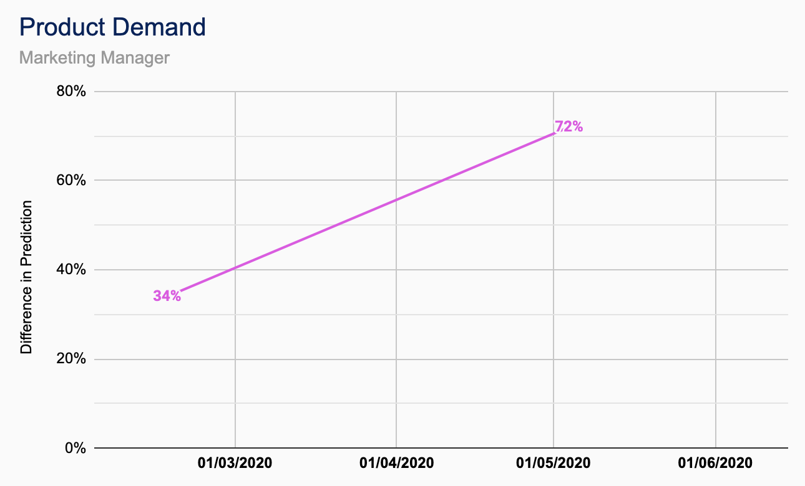

Cameron Smith
Contributions
| TutorPoint |
|---|
| Client-side Whiteboard Module |
| Server-side Whiteboard Module |
| Other |
|---|
| Marketing Strategy Development and Maintenance |
| CUBIXEL Name and Logo Design |
| TutorPoint Name and Logo Design |
| CUBIXEL HTML Website Development |
| CUBIXEL HTML CSS Designs |
TutorPoint Breakdown
QA Metrics
-

Product Awareness - Profile Visits
The total number of people that have visited/ viewed the product social media account over the period of a week. -
Product Awareness - Profile Reach
The total number of people that have viewed/ interacted with any of the posts made by the product social media account over the period of a week. -

Product Growth
The total number of people following the product social media account at the time of measurement. -

Product Demand
Percentage of surveyed people currently using or looking for the product or similar products, measured at the beginning and end of the development period. -

Coherence to Management QA Metrics
Use the assess the ‘QA Metric Testing’ document and check that all QA Metrics have a test and are being satisfied. This should be done at the end of every iteration, measured as a percentage of metrics being currently assessed. -

Employee Comprehension of Company Ethos
Complete random audits once every four weeks on one member of the team using the ‘Team Checker’ document. Number of non-compliances noted and raised if necessary. -

Document Standardisation
Company documents proofread every other iteration with any issues noted and raised. Number of non-compliances recorded and highlighted on the ‘Document Checker’ document.